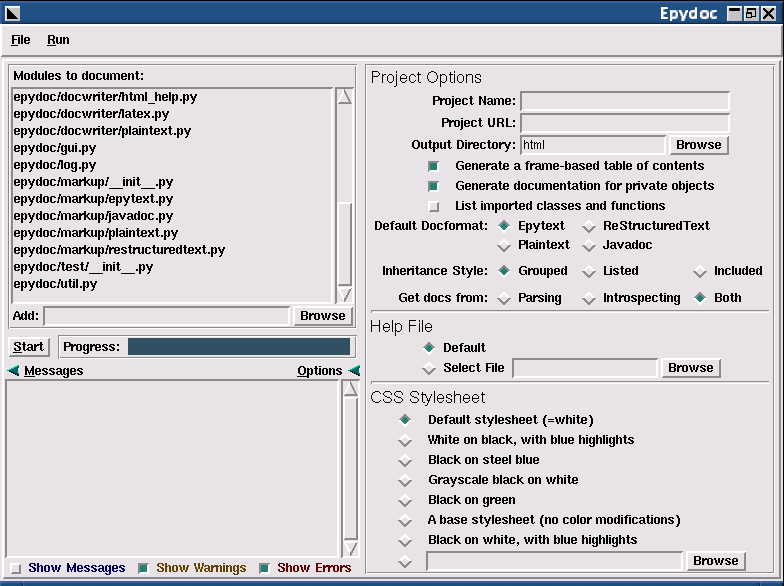

The epydoc script can be used to create API
documentation for a set of modules and packages:
epydoc [-oDIR] [-nNAME] [-uURL] [-cSHEET] [--private-cssSHEET] [-v]MODULES...
MODULES...epydoc/epytext.py") or module names (such as
"os.path"). The filename for a package is its
"__init__.py" file.
-o DIR, --output DIR, --target DIR-n NAME, --name NAME-u URL, --url URL-c CSS, --css SHEETSHEET can be a filename, or the name of a
built-in stylesheet. For a list of the built-in stylesheets, run
"epydoc --help css".
--private-css SHEET-v, --verboseFor example, the following command is used to produce the API documentation for epydoc itself:
[epydoc]$ epydoc -n epydoc -u http://epydoc.sourceforge.net \
-o api --css blue --private-css green -v \
src/epydoc/*.py
Note that all options must preceed the list of modules. The usage
description above does not include all options; for a list of all of
the command line options supported by epydoc, run
"epydoc --help". For a complete description of the
command line usage for epydoc, see the epydoc(1) man page.
Epydoc also includes a graphical interface, for systems where
command line interfaces are not convenient (such as Windows). The
graphical interface can be invoked with the epydocgui
command, or with epydoc.pyw in the Scripts
subdirectory of the Python installation directory under Windows.
Use the "Add" box to specify what modules you wish to document.
You can specify modules using filenames (such as
"epydoc/epytext.py") or module names (such as
"os.path"). Once you have added all of the modules that
you wish to document, press the "Go!" button. Epydoc's progress will
be displayed on the progress bar.
To specify the package's name and URL, the output directory, and the CSS stylesheet, click on the "Options" arrow at the bottom of the window. This opens the options pane, which contains fields corresponding to each command line option.

The epydoc graphical interface can save and load "project files",
which record the set of modules and the options that you have
selected. Select "File→Save" to save the current
modules and options to a project file; and
"File→Open" to open a previously saved project
file.
The epydoc script can be used to check the
completeness of the reference documentation. In particular, it will
check that every module, class, method, and function has a
description; that every parameter has a description and a type; and
that every variable has a type. If the "-p" option is
used, then these checks are run on both public and private objects;
otherwise, the checks are only run on public objects.
epydoc --check [-p] [-v] MODULES...
MODULES...epydoc/epytext.py") or module names (such as
"os.path"). The filename for a package is its
"__init__.py" file.
-p-v, --verbose-vv, -vvv, -vvvvFor each object that fails a check, epydoc will print a warning. For example, some of the warnings generated when checking the completeness of the documentation for epydoc's private objects are:
epydoc.html.HTML_Doc._dom_link_to_html........No docs epydoc.html.HTML_Doc._module..................No type epydoc.html.HTML_Doc._link_to_html.link.......No descr epydoc.html.HTML_Doc._author.return...........No type epydoc.html.HTML_Doc._author.authors..........No descr, No type epydoc.html.HTML_Doc._author.container........No descr, No type epydoc.html.HTML_Doc._base_tree.uid...........No descr, No type epydoc.html.HTML_Doc._base_tree.width.........No descr, No type epydoc.html.HTML_Doc._base_tree.postfix.......No descr, No type
If you'd like more fine-grained control over what gets checked, or
you would like to check other fields (such as the author or version),
then you should use the DocChecker
class directly.
Epydoc creates a CSS stylesheet (epydoc.css) when it
builds the API documentation for a project. You can specify which
stylesheet should be used using the -c command-line
option. If you do not specify a stylesheet, and one is already
present, epydoc will use that stylesheet; otherwise, it will use the
default stylesheet. For a list of the CSS classes used by epydoc, see
the default stylesheet.
Epydoc will create a help file (epydoc-help.html)
when it builds the API documentation for a project. If a help file is
not specified, then the default
help file is used.
| [Epydoc] | [Installing] | [Epytext] | [Author] |
|